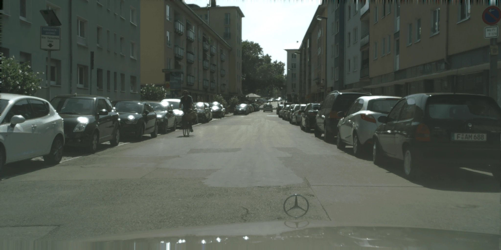
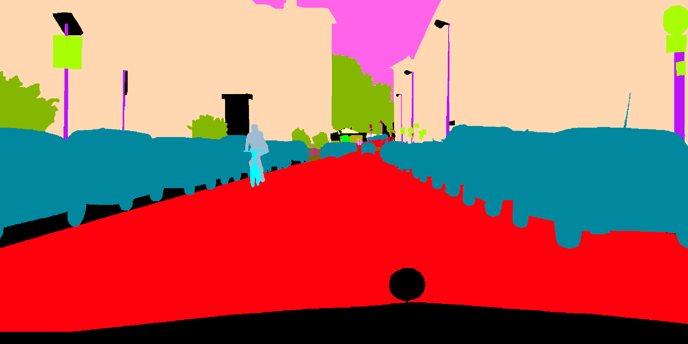
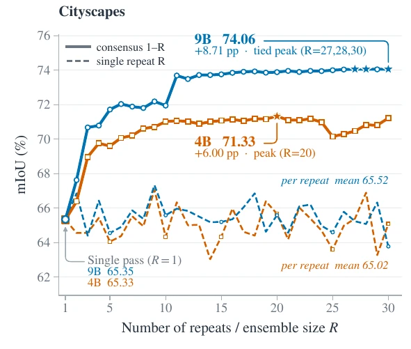
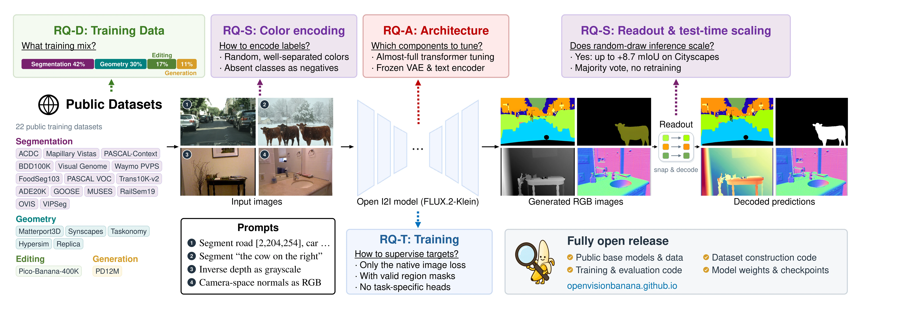
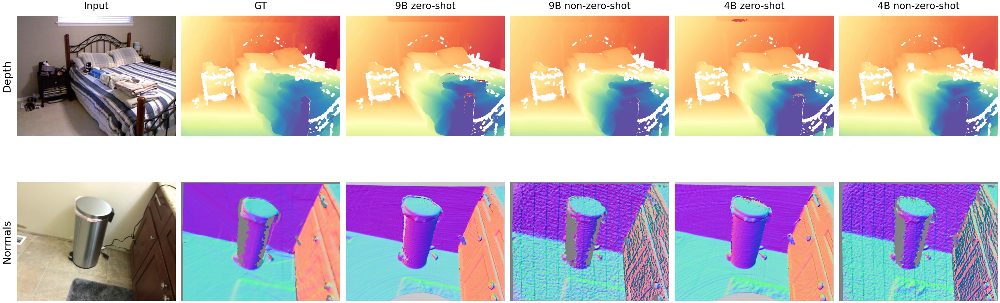

TL;DR
Turn an image generator into a
general-purpose perception model.
Open Vision Banana fine-tunes open-weight FLUX.2 Klein 4B and 9B image generators on public data. The same model generates an RGB image for segmentation or geometry, then a deterministic decoder reads out the prediction. No task-specific prediction heads or losses are added.
2open base model sizes
6perception tasks
0task-specific heads
The unified interface
Perception, expressed as image generation.
Every OVB checkpoint serves multiple tasks through the same image-generation interface. Choose a task to explore real inputs and predictions from the paper. Instructions are summarized; mask colors encode labels. The editing tab shows a capability retained after perception training.
Task instruction · summarized
Paint the requested Cityscapes classes with their assigned colors.
OVB image generator
Readout
nearest prompted color → class label
Decoded semantic mask
Hover to reveal input

Measured performance
A shared model for six perception tasks.
Selected main-paper results compare OVB with Vision Banana and specialist models across segmentation, relative depth, and surface normals. Scores include model sizes and inference details; each OVB checkpoint serves multiple tasks.
How does OVB compare?
Selected main-paper scores include the model size and inference setup. OVB's 20-pass Cityscapes score exceeds the reported Vision Banana and SAM 3 scores. Across the other segmentation tasks, it exceeds some specialist baselines while trailing Vision Banana.
| Task & benchmark | Open Vision Banana | Vision Banana | Selected specialists |
|---|---|---|---|
| Semantic segmentation Cityscapes val · mIoU ↑ | 74.99B · 20-pass vote 69.2 mean single pass | 69.9 | SAM 3 65.2X-Decoder 52.0 |
| Referring segmentation RefCOCOg val (UMD) · cIoU ↑ | 68.59B Original expressions | 73.8 | SAM 3 + Gemini 2.5 Pro 73.4HybridGL 51.3 |
| Reasoning segmentation ReasonSeg val · gIoU ↑ | 73.64B + Qwen3-VL-32B-Thinking | 79.3+ Gemini 2.5 Pro | SAM 3 + Gemini 2.5 Pro 77.0SegZero-Qwen2.5-VL-7B 62.6 |
| Instance segmentation SA-Co/Gold · cgF1 ↑ | 38.99B · 11-pass consensus + Qwen3-VL-8B presence gate | 47.5+ Gemini 3.1 Flash-Lite | OWLv2 24.6DINO-X 21.3 |
| Relative depth NYUv2 · δ₁ (%) ↑ | 96.79B Per-image log-depth alignment | — | Marigold V2 98.0Lotus-2 97.6 |
| Surface normals NYUv2 · mean error (°) ↓ | 13.349B Camera-space normals | 17.8 | Marigold V2 16.6Lotus-2 16.9DSINE 16.4 |
Higher scores are better, except for surface-normal mean error, where lower is better. Segmentation baselines and Vision Banana's rounded normal error come from the Vision Banana report, Tables 2–5 and 7; specialist geometry scores come from the Marigold V2 report, Tables 1 and 9. Models differ in training data, readout, inference budget, and language-model dependencies; multi-pass results use additional inference. Geometry evaluation protocols may differ. Dashes indicate omitted scores. Full evaluation details will accompany the updated manuscript.
A central finding
Test-Time Scaling for Vision Models
The model often finds the right regions but assigns the wrong prompted colors. OVB repeats the same image with fresh class-to-color legends, decodes each output into common class IDs, then takes a pixel-wise majority vote. These extra inference passes improve segmentation accuracy, with no additional training.
-
Change the color legend
Request the same categories with different color assignments.
Pass 1RoadCarPass 2RoadCar -
Predict and decode
The same OVB model generates each image. Decode colors into common class labels.
PurpleRoadPass 1YellowRoadPass 2 -
Vote on the labels
For each pixel, keep the category selected by the most decoded predictions.
RoadRoadCarMajorityRoad
Cityscapes · 9B65.6 → 73.9mIoU, mean single pass → 20-pass vote
COCO-Object · 9B37.5 → 51.6mIoU, mean single pass → 90-pass vote

The gain comes from correcting color binding.
On Cityscapes, the 9B model's single-pass score is 65.6 mIoU, yet an oracle that relabels its predicted regions reaches 85.9. Voting raises measured accuracy while the oracle region score barely changes. On COCO-Object, wrong-class foreground pixels fall from 19.0% to 10.3% over 90 passes.
WHAT MAKES THE RECIPE WORK
Designing Generative Perception Models
The paper varies target encoding, prompts, training data, and model adaptation under controlled settings. Three takeaways matter most for applying this approach.
RGB interface
How labels map to colors matters.
A model trained with one fixed Cityscapes legend scores 54.3 mIoU under that legend, but only 7.1 when the colors change at inference. Randomized assignments teach it to follow the prompt; a well-separated 64-color palette provides the best overall trade-off in the palette study.
Multi-task recipe
Balance performance across tasks.
Prompt and target encoding choices, data composition, replay, and training duration affect depth, normals, segmentation, and retained generative abilities differently. More data or longer training is not uniformly better, and gains on one metric can come at the expense of another. The final recipe is a multi-task compromise, selected across tasks rather than on a single benchmark.
Model adaptation
Adapt more of the backbone.
Tuning only the last few transformer blocks performs poorly; strong perception requires adapting a substantial fraction of the backbone. Performance improves markedly as more of the transformer is adapted, though depth, normals, and segmentation favor slightly different adaptation scopes.
Explore the complete recipe and architecture

Where the limits show
Geometry is useful, but domain-dependent.
OVB predicts relative inverse depth and camera-space surface normals through RGB images. Per-image depth alignment enables evaluation of relative scene structure, while performance on both tasks varies with the domain and training data.
Relative depth
OVB recovers scene structure on NYUv2 and DIODE. Evaluation uses per-image alignment; aligned scores do not imply absolute distances in meters.
Surface normals
OVB predicts camera-space surface orientation, with competitive selected results on NYUv2 and Sintel. Predictions can still contain artifacts.
Relative depth · NYUv2
Input

Ground truth
OVB 9B
Surface normals · ScanNet
Input
Ground truth
OVB 9B · zero-shot
Selected geometry results
Higher δ₁ is better for relative depth; lower mean angular error is better for surface normals. OVB's depth scores use per-image log-depth alignment.
| Method | Relative depth · δ₁ (%) ↑ | Surface normals · mean error (°) ↓ | ||
|---|---|---|---|---|
| NYUv2 | DIODE | NYUv2 | Sintel | |
| Marigold V2 | 98.0 | 97.1 | 16.6 | 28.7 |
| Lotus-2 | 97.6 | 95.5 | 16.9 | 30.3 |
| DSINE | — | — | 16.4 | 34.9 |
| Vision Banana | — | — | 17.8 | — |
| Open Vision Banana 9B | 96.7 | 92.1 | 13.34 | 28.14 |
Published specialist values come from the Marigold V2 report, Tables 1 and 9; Vision Banana's normal error is rounded from its report, Table 7. Evaluation protocols may differ. Dashes indicate scores omitted from this comparison; full results are in the paper.
Open by construction
A recipe others can inspect, reproduce, and extend.
OVB uses public base models and datasets. All important resources are linked here.
Model weightsHugging Face model repository
View models ↗Code repositoryOpen Vision Banana on GitHub
View code ↗→
Data pipelineConstruction and preprocessing
Planned→
Evaluation harnessReadouts, protocols, and metrics
Planned→
Updated paperCurrent manuscript in preparation
PlannedCitation
Using Open Vision Banana?
If you use OVB in your work, please cite the project. This provisional citation will be updated when the manuscript is released.
@misc{jadon2026openvisionbanana,
title = {Open Vision Banana: A Fully Open Recipe for Generative Visual Perception},
author = {Jadon, Arpit and Pariza, Valentinos and Ruthardt, Jona and
Yamada, Ryousuke and Koepke, A. Sophia and Bursuc, Andrei and Asano, Yuki M.},
year = {2026},
note = {Manuscript in preparation}
}